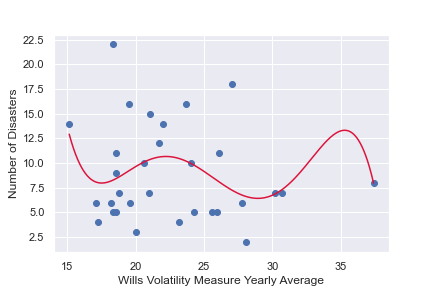

due to limited volatility indexes for global markets, I created my own measure of volatility (wills volatility). I coded an algorithm in python to calculate this automatrically from stock market data which I accessed via an API with the Yfinance module in python. I then rerieved vix data with this API and aligned my measure of volatility with vix readings in a pandas dataframe to check for correlation. the data showed a 0.806 pearsons correlation coefficent. view code
I scraped hurricane data[3] using pANDAS in python to investigate short term effects on volatility from severe storms/cyclones. view code
I used python to calculate the deviation of volatilitiy from the monthly (21 point) moving average and the trailing monthly moving average on dates of hurricanes closest approaches. this interactive chart shows these deviation for the s&p 500.
despite pledges made at the climate summit
cop26, the world is still heading for
between 2.4 to 2.9 degrees celcius of warming
by 2100.
The aim of this project is to investigate
the if climate change has an impact on
volatility within the stock market, and if so, how?
I will focus my research on the
US.
Second-order ramifications of climate change, such as extreme weather, are likely to be what impacts market volatility. Thus, I downloaded extreme weather data[1] and global temperature anomolies data[2] to begin my analysis.
i wrote a function using python, pandas and scipy to perform a 2 sample t-test for the distributions above with a 0.05 siginficance level. The test statistics showed that volatility deviations were signification for the s&p 500 and nasdaq and thus reject null hypothese. in contrast, dow jones 30, russel 2000, and russel 3000 produced insignificant test statistics and so we fail to reject the null hypothese for these indicies. view code
I used python to align temperature anomolies data with the extreme weather events dataset and then used vega-lite to produce a linear regression between these time series to determine correlation. view code
I developed a machine learning model with SKLearn to regress climate events on volatility. This showed there to be no correlation between volatility and climate change. view code
I produced an interactive chart with a Loess regression of Wills Volatility against vix to visualise and explore correlation between my volatility measure and the vix.
Aligning market volatility time series with the dates that hurricanes hit was challenging. I developed a piece of software to automate this process for me. entering a yahoo finance ticker into this function calculates: volatility, 21 point moving average volatility, 2 week trailing 21 point moving average volatility (to account for weather forecasting), and returns this data in a dataframe aligned with the scraped hurricane data. view code
Since no correlation was found over long-term time frame. I will investigate effects on a short time frame around when severe storms hit since severe storms and tropical cyclones appear to have the largest correlation with global mean temp anomolies I will focus on looking at hurricanes.
this histogram visualises index volatility distributions on dates of hurricane closest approaches against disbributions of that date for every year a hurricane did not hit.
we can
see that the
us indicies tend to show volatility above its
moving average on dates of hurricane closest approach,
whereas we do not observe this trend for the european
indices on these same dates.
to determine causality
I will compare
volatility of
us indices on the date a hurricane hits (test group)
to the mean volatility on that same day for every
year one didn't hit (control group).
I developed a peice of
software to extract and align this data for me. view code
The area shows running moving average of the differences in index volatilty from its monthly moving average on dates of hurricanes closest approach. Select index below.
there is a strong, positive correlation between the annual number of
severe storms and tropical cyclones within the US mean global temperature anomolies.
there were no long-term impacts found on stock market Volatility
from increased severe storm events.
looking at short term impacts of hurricanes displayed short term increases
in volatility on the days of hurricane closest approach.
there effects were established to be causal for the
s&p 500 and
nasdaq.
low cap stock and high cap stocks both showed infsignificant results.
as climate change continues we could see more frequent short term
periods of increased volatilty.
further investgation is needed to establish why only two indicies
showed significant results.
this could be to do with sector or industry
compromisation of indexes.
moreoever, this project limits focus to the
us and further investigation for other global stock is required.
https://www.ncdc.noaa.gov/billions/events[1]
https://www.ncdc.noaa.gov/cag/global/time-series/globe/land_ocean/1/11/1980-2021[2]
https://www.mapsofworld.com/hurricane/dates.html[3]
https://uk.finance.yahoo.com/world-indices/